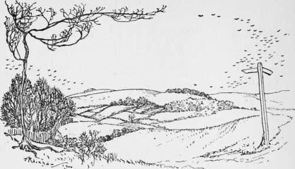

The Horse. Continued
Description
This section is from the book "Hunting: A Manual of Fox, Hare, Stag & Otter Hunting", by J. Otho Paget. Also available from Amazon: Hunting: A Manual of Fox, Hare, Stag & Otter Hunting.
The Horse. Continued
There are so many books on the horse now, that every one knows what the perfect animal should be like, but I may as well give you my ideas. To begin with, I prefer a big bold eye in a sensible head, which is set on to a neck that is moderately thick and not too long. Sloping shoulders, a strong loin and powerful quarters are essential qualities in a hunter. In addition to these I like a deep girth, ribs with an outward spring, short flat legs, and muscular thighs. Hocks should be large, clean, and flat. Small weak fetlock-joints are to be avoided. I do not mind the shape of quarters, but they must have length and strength one way or the other.
Whyte-Melville said that a man should never indulge in the luxury of shoulders until he was past forty, but it seems to me that by following this advice there is every probability of his not reaching that age. A broken neck effectually prevents, a man from following hounds, and it is not more welcome at twenty-five than it is at fifty. If a young man rides only perfect hunters, he will never improve in his horsemanship, and he will never become first-class over a country. By all means let him ride every variety he can get hold of, both of the unmade and the unmannerly, but the bad-shouldered horse should be left severely alone and allowed to follow the vocation of harness, for which nature has fitted him.
We all know when a horse has perfect shoulders or when they are very bad, but it is the different degrees in between which we dispute over. What do we mean when we speak of a horse having good shoulders ? The idea is that when the animal has a certain slope of shoulder, he will not turn over with you, however often he may fall. The whole secret lies in balance. A horse that is perfectly balanced will never give you a really bad fall, and will never be a really hard puller. A good horseman with light hands can rectify the balance to a certain extent if the error is only slight. Seat yourself on a child's rocking-horse, just a trifle in front of the centre of balance, and then proceed to rock. You will find that every forward movement brings you up with a jar that shakes both you and your wooden steed. That is exactly what happens to the ill-balanced horse in jumping a fence, the whole strain coming on the forelegs, so that it is easy to understand the difficulty of recovering after a stumble. The balance is very seldom the other way, and when it is means no particular discomfort to the rider, but merely more exertion to the horse in jumping. You will perceive this by sitting a little back on the rocking-horse, which you will then find requires considerable strength to make it rock. Has it ever occurred to you to speculate why women's horses very seldom fall, and why a woman requires a much stronger horse in comparison than a man ? I believe the reason for both facts is, that the position on a side-saddle throws the rider's centre of gravity behind the horse's centre of balance and keeps it there, so that, however badly a horse may stumble, there is no extra weight in front to prevent his recovery. The same cause subjects the animal's quarters and propelling power to a greater strain than when the weight is in the middle, as it is in the position a man rides, hence the necessity for a strong horse to carry a woman.
Good shoulders and balance are not quite one and the same thing, as I have known one to exist without the other. A good shoulder may, however, be called the basis on which nearly every even balance is built up, and the only way to make certain the former is right, is to satisfy yourself about the condition of the latter.
America has recognised this balance theory, and the jockey Sloan has opened the eyes of English race-goers by putting it to the test. His system of riding is to take all his weight from the horse's hindquarters and throw it forward. In a flat race over a smooth course this must make it easier for the horse, and when there are only a few pounds' weight between the different horses competing, it is not surprising that the jockey who alone follows this plan should score many successes. Whether the horses ridden in this manner suffer in their forelegs more than those ridden in the ordinary way, is a question that could best be answered by the trainers.
It would require tremendous nerve to adopt the Sloan system for steeplechasing, and of course for hunting it would be out of the question.
Sloan has proved to us that the even balance which we think absolutely necessary in a hunter is out of place in a racehorse. Herein lies the danger of breeding from stallions whose sole recommendation is a good record on the turf. You see occasionally a well-balanced thoroughbred, but the majority of those that win races have a shortened forehand with extra length and strength behind the saddle.
I am not a believer in the ordinary show, but I think the shows and premiums for thoroughbred stallions are likely to do great good in improving the breed of hunters. Formerly we had to be content with a stallion if he was not thought good enough to be a sire of racehorses, but now there is every encouragement to keep a horse that is sound, has plenty of bone, and is built somewhat on hunter lines.
The man who attempts to breed hunters may expect many failures and few successes. The reason for this is that the two animals mated are not of one type, and the hope is to graft quality on to strength, but the usual result is a combination of the worst points of both. It is a well-known rule in breeding, that the greater the difference in outward appearance between male and female, the more will their progeny vary in shapes and sizes. Crossing is and always will be a risky game to play, but that is at present our only way of breeding a hunter.
The thoroughbred horse on the half-bred mare is the usual plan, but I prefer the other way about. Size and strength with the sire, quality and staying-power with the dam. Some of the best hunters I have ever seen have been by half-bred stallions out of thoroughbred mares.
In a country that is chiefly arable, and where there are many banks to scramble up, a horse that is only three-parts thoroughbred is perhaps the most comfortable mount, but for Leicestershire I should always prefer one clean bred, providing he had the substance to carry my weight. A thoroughbred horse up to weight is very difficult to find, and when found it usually requires a well-filled purse to buy. Lord Lonsdale when hunting the Quorn rode a splendid class of horse, and I believe nearly everything in his stable had a birthright in the stud-book. I would not, however, advise a beginner or a moderate rider to buy that class, even if his means would allow him to do it. A thoroughbred horse has generally very high-strung nerves, and the excitement of hunting may lead him to do something rash, unless there is a good man in the saddle. The bad rider will find that the cock-tail will get him into fewer difficulties, and will be safer, if not quite so brilliant as the other.

Continue to: